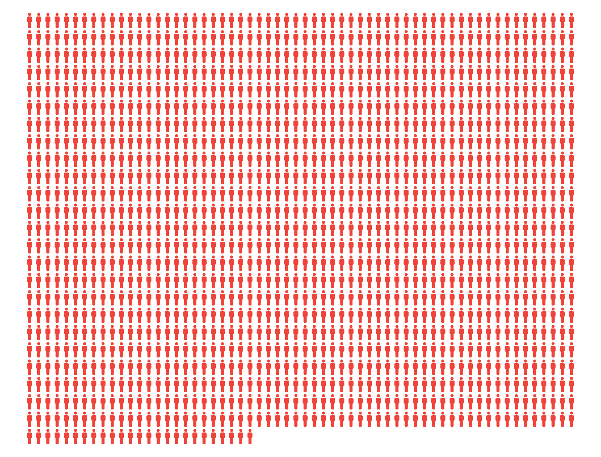
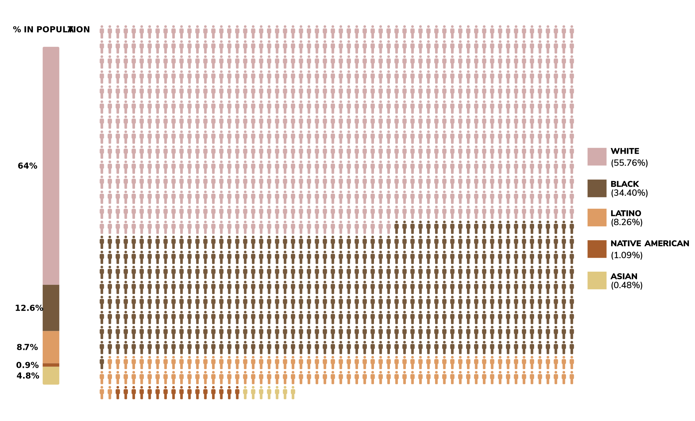
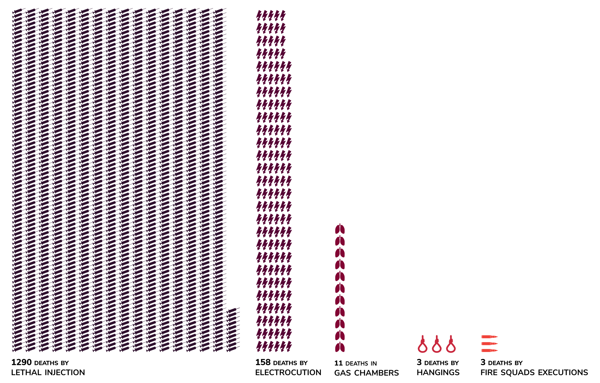

Disclaimer
We’ve been conducting this analysis for several weeks. All the data we used comes from trusted, reliable and open sources (TDCJ and DPIC1). The study starts in 1972 and is focused on the death penalty landscape in the United States of America. We tried not to take sides for or against death penalty. Our ambition was to shed light on that controversial, sometimes distorted topic, thanks to thorough data-driven methodology. Should you have any question or comment, drop us a line at partnersincrime@telecom-paristech.fr.
Death Penalty Around The World
Today, death penalty exists - legally or in practice - in almost 1 country out of 4.
There are 52 countries in which you can be executed, for very diverse reasons.
On top of that list, you won’t be surprised: China, Iran, Saudi Arabia, Iraq…
Countries with limited freedom, that most likely classify official numbers of executions.
But surprisingly, the United States is the 5th country and only democracy of that list .
Death Penalty in the US
Even within the United States, there are some discrepancies: 31 States still apply death penalty.
As the above map shows, the southern part of the country has the highest numbers of executions since 1976.
Texas culminates with 545 killed people in 40 years .
Total Number of People Executed Each Year
Each year, since 1980, multiple people are executed by an American court.
Oddly enough, the number of executions has increased in the 90s to spike in 1999 with 98 executions, among which 35 took place in Texas.
Since then, it has decreased at a near continuous pace.
Total Number of People Executed Since 1976
Since the Supreme court reaffirmed the legality of capital punishment in 1976, 1465 people have been executed.

Who are Those People?
- Gender -
Gender-wise, there is a very clear bias that favors women.
They represent approximately 1% of criminals sentenced to death , due to the perception of their weakness and apathy.
The 16 women that have been executed since 1976 did not fit the wife-and-mother stereotype that society usually attributes to women -
they were all women of color or lesbians - which questions the impartiality of the Courts.
Who are Those People?
- Age -
The median age of an executed prisoner is 40 years old .
Considering that death-row inmates typically wait a decade before their execution, those figures point out that prisoners sentenced to death are rather young.
Who are Those People?
- Race -
The racial bias has also been raised by several studies: almost half of the executed defendants are from ethnic minorities.
People of color have accused a disproportionate execution rate compared to their percentage in the total population.
Afro-Americans account for 34.5% of executions whereas they represent 12% of the population since the 1970s.
Many studies denote that the color of the victim has a huge impact on the decision of the Court.
A Black defendant with a White victim is 14 times more likely to be executed than a White defendant with a Black victim.

Methods Of Execution
The means of execution have evolved over time, always in a perspective of finding a more humane, painless and dignified method. The lethal injection has been introduced in 1977 and is, since then, the most common execution method. The United States has been firmly criticized for the use of electrical chair until the Supreme Court ruled it unconstitutional.

Methods Of Execution
- Failures -
Even if lethal injection is now the most common method, it has the highest fail rate (approximately 7.16%).
Medical ethics prevent doctors from performing executions which explains why this controversial gesture is accomplished by non medical carceral personnel , thus leading to a high rate of failure.
In those cases, inmates are dying for long minutes.
Those botched executions gave rise to arguments against death penalty.

Cost Of Capital Punishment
The cost of capital punishment is often denounced by death penalty opponents. California could have spent $4bn on capital punishment since 1978, a mere $308M for each of the 13 executions carried out since then. Other studies reveal that other types of punishment (such as lifetime incarceration) would cost 70% less.
Zoom on Texas
Texas is by far the deadliest State of the country.
545 inmates have been executed in 40 years, meaning a pace of 1 execution per month.
Zoom on Texas
- Last Words -
As you might know, some people can attend executions.
Very often, the victim and the prisoner’s families are present, as well as volunteer witnesses.
The last words pronounced by the death-row inmate are recorded.
Texas has made these statements public, allowing us to perform a text-mining analysis using R language.
The above cloud shows the most often used words before the offender is put to death.
Zoom on Texas
- Last Words -
We’ve gathered the last words of sentenced to death into 4 categories, based on the occurrence of the words in their speeches:
Religion : many death-row people invoke God and have a spiritual last statement: “I pray that the Lord takes care of me” - “May Jesus Christ see my spirit”
Love and family : as families often attend the executions, defendants talk to them: “to my mother and my family, I love you”
Peace and forgiveness : “I want to say I’m sorry for the pain I’ve caused you people. I’m sorry I can’t bring everybody back.”
Innocence : “all I want to say is that I’m innocent”
Zoom on Texas
- Last Meals -
An American unspoken rule grants death-row inmates the opportunity to order whatever they want for their last meal. Huntsville's prison in Texas is famous for its flexibility regarding the choice of that famous last meal. Prisoners usually order typical American food: fries, cheeseburger, T-bone steak… reminding us that no matter what happened, they’re still humans.
Time Between Sentencing and Execution
It can talk up to 10 years to enforce capital punishment law.
The average time spent in the death row has increased over years, due to three main factors.
First, the Courts have to double check a long list of factors to make sure they don’t kill innocents.
Second, the process of appeals includes nine step that each take a long time.
Third, the United States have faced a drug shortage due to the resistance of pharmaceutical companies.
Exoneration
- Reasons -
Death-row inmates often fight for years to push the Court to withdraw the capital sentence. This process is rarely successful, it gives them more time, at most. Yet, some prisoners are exonerated from the punishment, for 3 main reasons: either they’re pardoned, acquitted, or the charges are dismissed.
Exoneration
- Exonerated People-
Those cases remain rare, but still significant: 120 people have been exonerated, a percentage of 8.2 of total executions since 1982.
Public Opinions
America’s opinion on death penalty has always been grounds for division. Republicans tend to support it while Democrats put efforts to end it. Although the latter is at its highest levels since 1972, opponents of death penalty have always been in minority (41% in 2017). The opposition to death penalty is consistent with the number of executions per year. We shall note that death penalty sees a growing support in the 90s while the number of executions increase accordingly. Since then, both figures follow a declining trend.